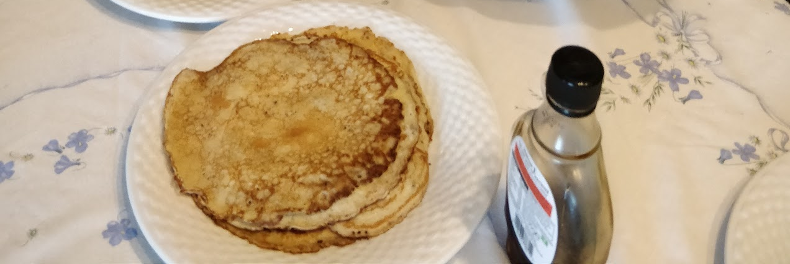

English Pancakes
 Vegetarian/Vegan
Vegetarian/Vegan
English pancakes for pancake day

120gplain flour2large eggs300mlmilk1 tbspmelted butter plus a little extra for frying- lemon wedges & caster sugar to serve
Mix the first four til smooth
Chill in the fridge for 30 mins
In a small frying pan melt a dab of butter
Pour a thin layer in and fry til golden and bubbly, flipping once.
Serve with the last two